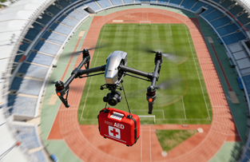
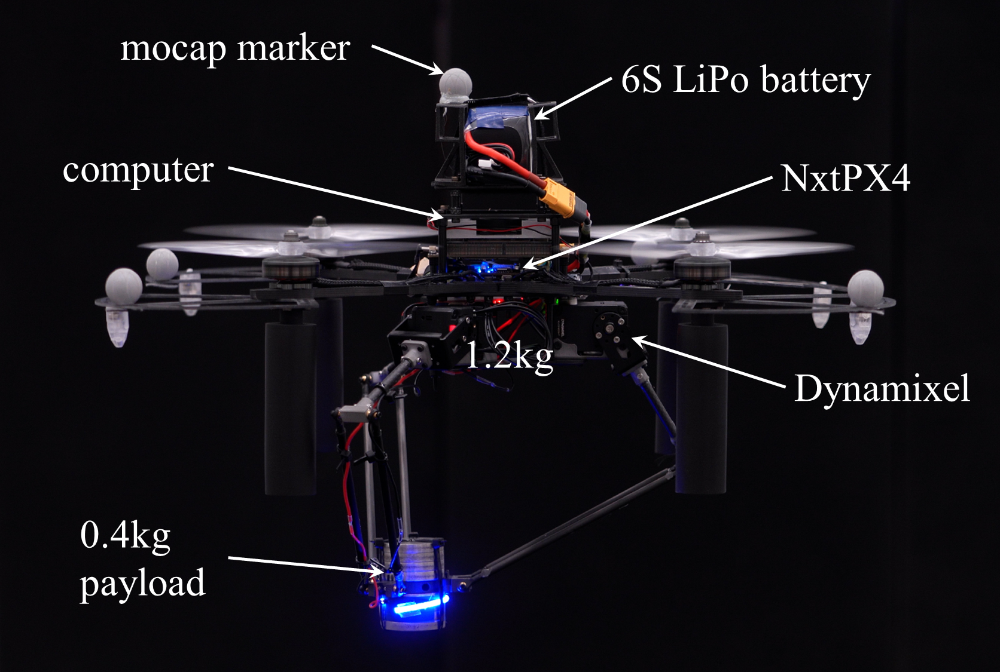
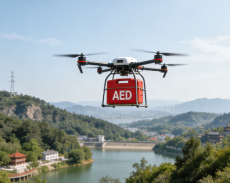
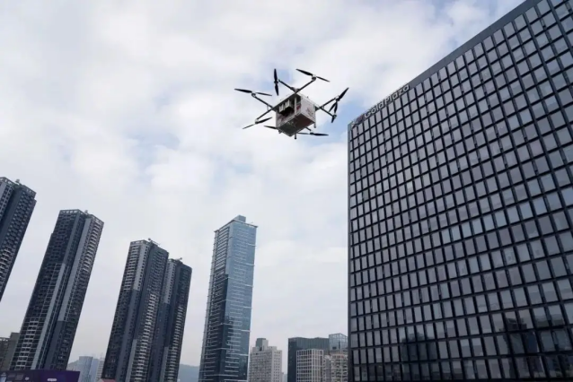
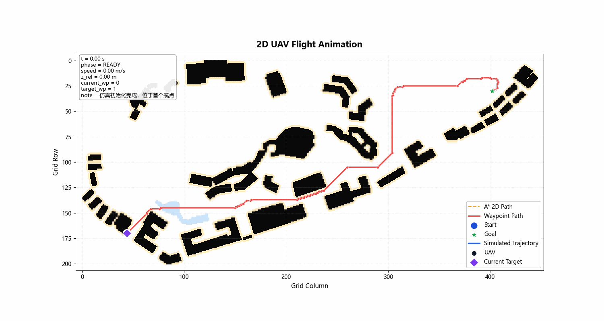
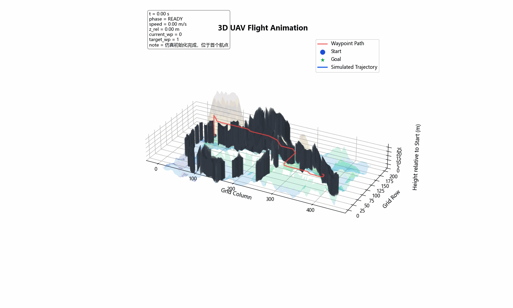
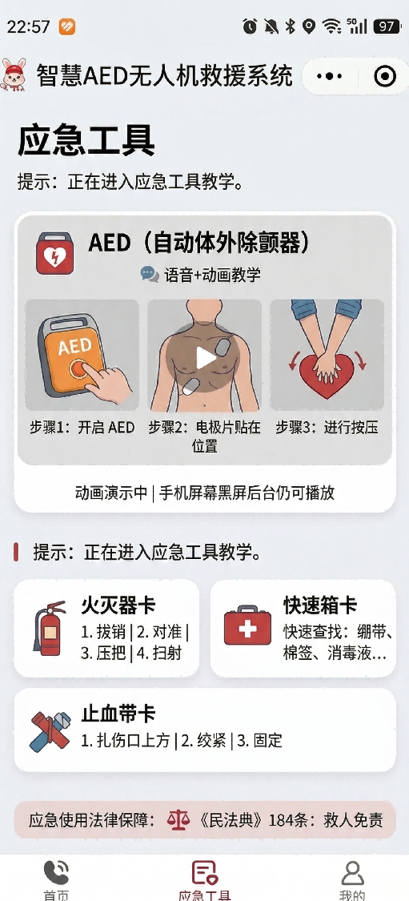

01
校园与大型场馆
越过人流与围栏，快速抵达操场、场馆和宿舍区。
项目使命
固定 AED 存在布设盲区与人工往返时间，救护车又受到地面交通制约。项目将“呼救、调度、规划、飞行、投送、教学”串成一条可演示的救援链路。
硬件平台
六旋翼平台承担航点飞行与载荷投送，机载计算与飞控协同完成路径执行。

SY800-2 平台参数
航姿解算与任务执行
算法部署与通信中枢
高功率飞行动力
载荷投送执行机构
应用场景
面向校园、景区与城市高层等地面救援受限环境，提供机动的 AED 补充网络。

越过人流与围栏，快速抵达操场、场馆和宿舍区。

绕开曲折道路，沿低风险走廊完成跨地形投送。

规划三维航路，缓解拥堵与垂直运输造成的延误。
核心算法
在改进 A* 中共同考虑建筑物静态风险与无人机动态风险。
仿真验证


单机规划展示航迹如何避开障碍与高风险区域，并保持连续、可执行的转向。
定量结果
校园场景统一采样仿真结果，用于方案对比，不代表真实医疗服务承诺。
四分钟覆盖率提升
校园 10 次测试记录
建设期成本基线
实飞验证
多轮校园试飞覆盖悬停、巡航、转向与航点到达。
交互原型
基于小程序视觉稿重构的交互演示，模拟定位、任务创建、无人机调度与预计到达反馈。
发起呼叫后，状态会推进到起飞、航行和抵达，可随时重置。
